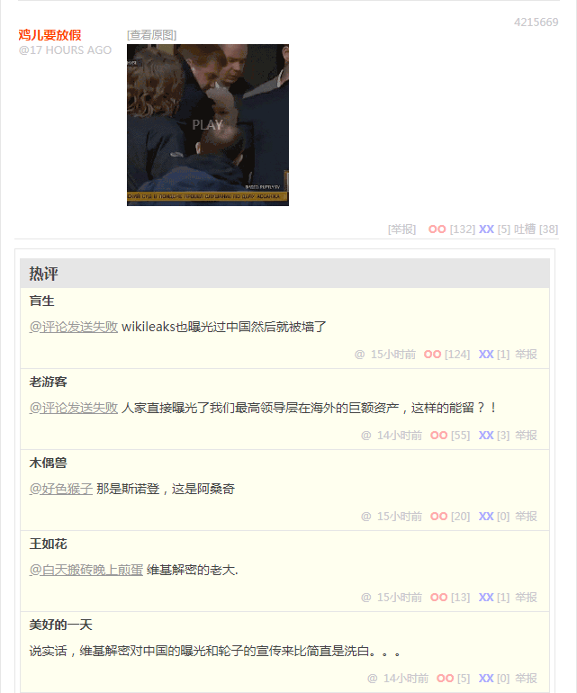
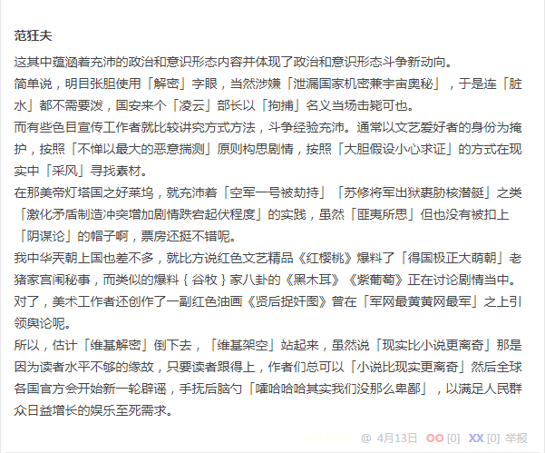
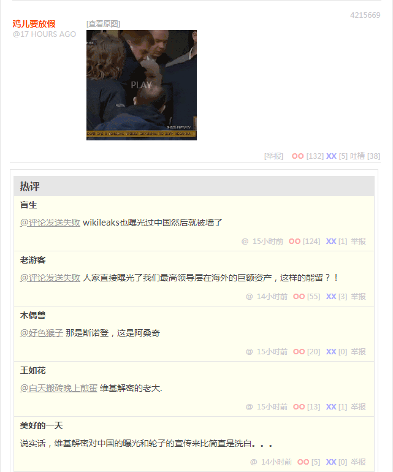
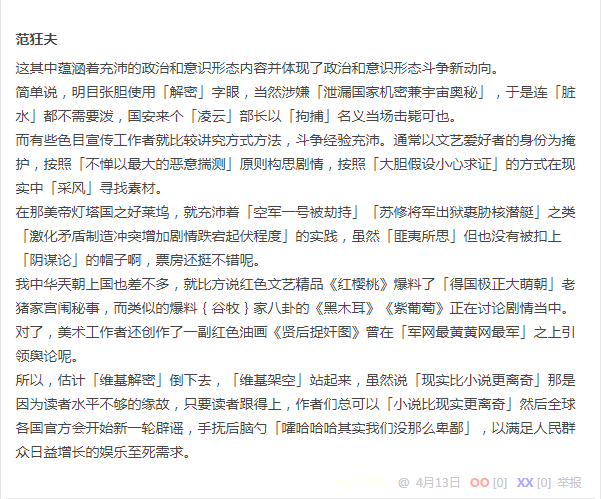

无聊图 4215669


无聊图 4215669


wikileaks也曝光过中国然后就被墙了
人家直接曝光了我们最高领导层在海外的巨额资产，这样的能留？！
那是斯诺登，这是阿桑奇
维基解密的老大.
说实话，维基解密对中国的曝光和轮子的宣传来比简直是洗白。。。
这其中蕴涵着充沛的政治和意识形态内容并体现了政治和意识形态斗争新动向。
简单说，明目张胆使用「解密」字眼，当然涉嫌「泄漏国家机密兼宇宙奥秘」，于是连「脏水」都不需要泼，国安来个「凌云」部长以「拒捕」名义当场击毙可也。
而有些色目宣传工作者就比较讲究方式方法，斗争经验充沛。通常以文艺爱好者的身份为掩护，按照「不惮以最大的恶意揣测」原则构思剧情，按照「大胆假设小心求证」的方式在现实中「采风」寻找素材。
在那美帝灯塔国之好莱坞，就充沛着「空军一号被劫持」「苏修将军出狱裹胁核潜艇」之类「激化矛盾制造冲突增加剧情跌宕起伏程度」的实践，虽然「匪夷所思」但也没有被扣上「阴谋论」的帽子啊，票房还挺不错呢。
我中华兲朝上国也差不多，就比方说红色文艺精品《红樱桃》爆料了「得国极正大萌朝」老猪家宫闱秘事，而类似的爆料谷牧家八卦的《黑木耳》《紫葡萄》正在讨论剧情当中。对了，美术工作者还创作了一副红色油画《贤后捉奸图》曾在「军网最黄黄网最军」之上引领舆论呢。
所以，估计「维基解密」倒下去，「维基架空」站起来。虽然说「现实比小说更离奇」那是因为读者水平不够的缘故。只要读者跟得上，作者们总可以「小说比现实更离奇」。然后全球各国官方会开始新一轮辟谣，手抚后脑勺「嚯哈哈哈其实我们没那么卑鄙」，以满足人民群众日益增长的娱乐至死需求。
补充
之前在《料敌从宽数学渣》当中已经讲述了与伪装成色目文艺爱好者的色目宣传工作者及色目情报工作者「交流」的过程，谁也没泄密吖。只不过「拿人钱财与人消灾」的广告商通过「曰若稽古」实践文艺理论的方式，被数学渣「如是我闻」的结合时事新闻加以解读罢了。
至于「真相」如何那不重要，说过多少遍了，兲朝一边实践「只要焚书坑儒，世界上就没什么真相」之类贝克莱主教式唯心主义原则，一边还在硬着头皮肿着脸灌输诡辩唯物主义意识形态。这种时候没必要较真，素材只要合理就可以加以运用，即便不是史实还可以架空嘛。
没准主席台前三排看见「卓越构思」就惦记着「复制并成功」呢，于是先射箭后画靶子，先编出剧本来再指使奴才照本宣科，于是现实中当然出现了「原型」，谁也不能说脑洞大开之写手造谣污蔑栽赃陷害。
顺便，红色文艺精品大作《贤后捉奸图》已经被我借鉴为《设定集》情节的一部分了，参考《〈设定集〉注释〔卌一〕》最后；另外在《【备份】从阳明扯到胡宏》当中也回忆了文艺理论与现实联系起来的大概时间。